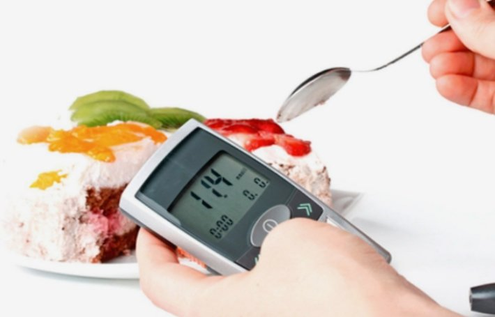
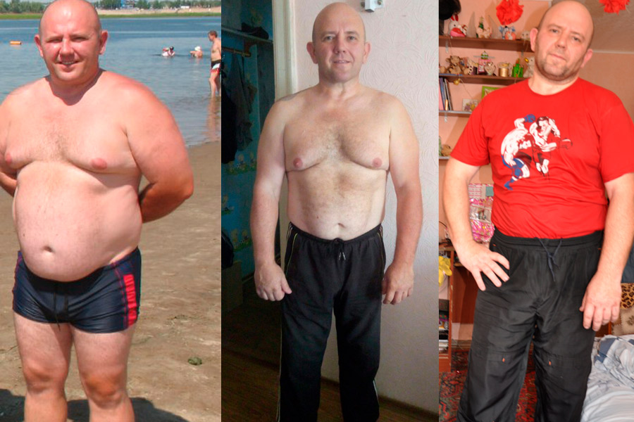

DIABETES TIPO 2. ¿CÓMO VIVIR CON ESO?
¡Hola a todos!
Mi nombre es Alejandro. Diabetes tipo 2 (DM 2)... me la diagnosticaron a los 43 años. A los 45 me las arreglé para curarme y ahora quiero decirles a todos cómo es posible en casa sin la supervisión de los médicos.
Cómo comenzó todo
Después de 40 años, comencé a engordar rápidamente. No era muy activo, por lo que asociar la obesidad con la enfermedad ni siquiera se me ocurrió.
Sueño deficiente, sed frecuente y sin causa, boca seca - todo lo asociaba con el exceso de peso. Cuando se agregó la visión bajada a este conjunto, empecé a desesperarme – ¡todavía era muy joven!

Casualidad
El tiempo pasaba, el peso seguía aumentando y yo permanecía en la ignorancia de mi enfermedad. Todo cambió un caso. Cuando llegué a un nuevo trabajo, tuve que pasar por un examen médico, en el que resultó que la obesidad era causada por la diabetes.
Me remitieron a un endocrinólogo, nutricionista y optometrista. Cada médico dio sus propias recomendaciones, y todas parecían ser un castigo: un montón de pastillas, una dieta estricta, control constante de azúcar y peso…
Honestamente traté de seguir todas las recomendaciones de los médicos. Tomaba medicamentos, reduje la comida chatarra al mínimo posible, traté de hacer ejercicio.
Los cambios forzados en el ritmo de la vida deberían haberme animado, porque nunca antes había estado interesado en los deportes y mucho menos en una dieta. Pero no me sentí mejor en absoluto. Me sentí esclavo de la enfermedad y lo hacía todo solo porque tenía mucho miedo de los efectos de la diabetes.
Soñé en mis pesadillas cómo me amputaban las piernas, cómo me convertía en adicto a la insulina y estaba obligabo a inyectarme a mí mismo, la cosa de la que tengo un miedo tremendo. En algún momento me di cuenta: si no gano esta guerra contra la diabetes, me vencerá. Y me animé.
Una cierta rabia me hizo perder peso, renunciar al postre y, en lugar de la deliciosa comida habitual, comer verduras y cereales que me parecían insípidos. ¡El azúcar estaba recuperándose, estaba seguro de que ya estaba en el camino de triunfo!
Decepción
Después de seis meses, volví al médico para «liberarme». Pero en lugar de la frase inspiradora "ahora estás sano, puedes continuar con tu vida normal", oí: "el azúcar está dentro de los límites normales, las recomendaciones permanecerán iguales, pero seguirás tomando otros medicamentos".
Me sentí horrible. En primer lugar, no se previeron relajaciones en la dieta. En segundo lugar, para las pastillas ya gastaba un tercio de mi salario. Y ahora el médico me recetó medicamentos aún más caros e insinuó: si quieres vivir, los tomarás.

Una ola de desesperanza me arrasó. Trabajar el resto de mi vida para poder comprar pastillas, limitarme a comer deliciosas comidas y no sentir el disfrute de la vida no encajaba en absoluto en mis planes. Por lo tanto, después de un breve desaliento, decidí hacer caso omiso a todas las recomendaciones del médico y comenzar a vivir una vida llena.
Tíbet, impresiones y cura
Lo primero que quería hacer era ir de viaje. Recogí todos mis ahorros y me fui al Tíbet. Además de las experiencias inolvidables del viaje en general, hice un montón de conocimientos interesantes, entre los que había personas de toda clase.
Una de ellas resultó ser un tipo genial que se libró de la diabetes hace un par de años sin clínicas ni restricciones. Daniel estuvo enfermo de diabetes desde la infancia, y a los 35 años participó en un ensayo clínico de un nuevo medicamento, que se estaba desarrollando durante los últimos 10 años para reducir el azúcar en la sangre.
El fármaco confirmó su eficacia en todos los ensayos y salió a la venta bajo el nombre comercial . Un nuevo amigo mío insistió en que tomara un curso de este remedio. Sus palabras sonaban tan convincentes que me atreví.

El remedio es completamente natural, certificado, no tiene contraindicaciones y efectos secundarios, por lo que no había nada que temer.
Cura
Tenía experiencia en el tratamiento con medicamentos, por lo que no tenía muchas esperanzas. Por la pureza del experimento, no me limitaba a comer ni esperaba un milagro. Pero sucedió.
En las primeras semanas de tomar el medicamento, todos los síntomas de la diabetes desaparecieron. Seguí bebiendo mucha agua, pero ya no había sensación de azúcar en la boca. Los mareos y los dolores de cabeza desaparecieron, comencé a dormir lo suficiente y, en general, me sentí mucho más despierto.
Incluso comencé a perder peso. Esta fue la noticia tan buena como mala, porque una reducción drástica de peso podría hablar de una exacerbación de la enfermedad. Los temores me empujaron a acudir al médico de nuevo.

Cuando una vez más pasé todas las pruebas, mi médico me declaró: "Eres sano como un roble. ¿De qué te quejas?". Incluso me confundí con la respuesta. Le conté que me habían diagnosticado la diabetes tipo dos, que seguía las prescripciones médicas que no tenían sentido. Que me fui de vacaciones y volví sano.
"En mi práctica, este es un caso raro pero no es el único. A veces, la diabetes se cura por completo. Lo más importante es que no te descuides más". Juré que vigilaría la nutrición con moderación y bromeé torpemente que espero que no nos volvamos a encontrar.
Han pasado 6 años desde entonces. De vez en cuando mido el azúcar con el estómago vacío, después de una comida o una fiesta. A lo largo de los años, solo dos veces vi 6,9 y 7,2 en el glucómetro. Así que puedo decir con toda confianza que gané la diabetes. Y todo esto gracias a Daniel y .
Dónde conseguir
Un par de veces he comprado falsificaciones en farmacias, por lo que no aconsejo a nadie que tome allí. Es mejor hacerlo en el sitio web del fabricante, definitivamente allí tienen un producto original. Además, hasta tendrán una promoción, estará disponible con un descuento del 50%.


Salud a todos!